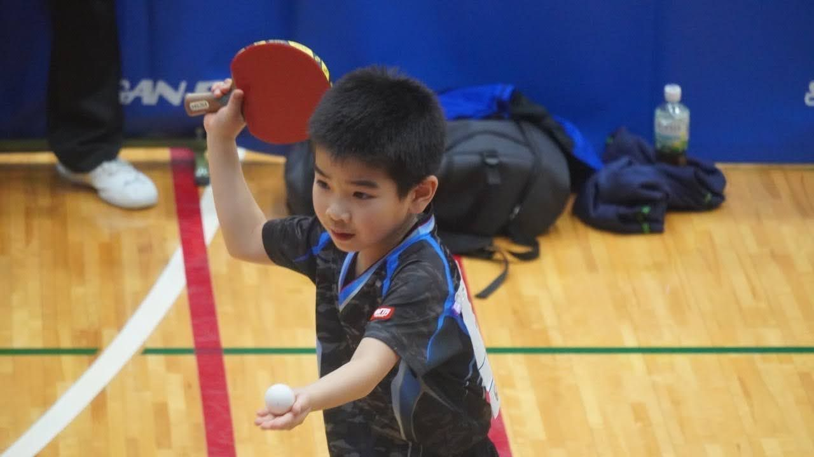
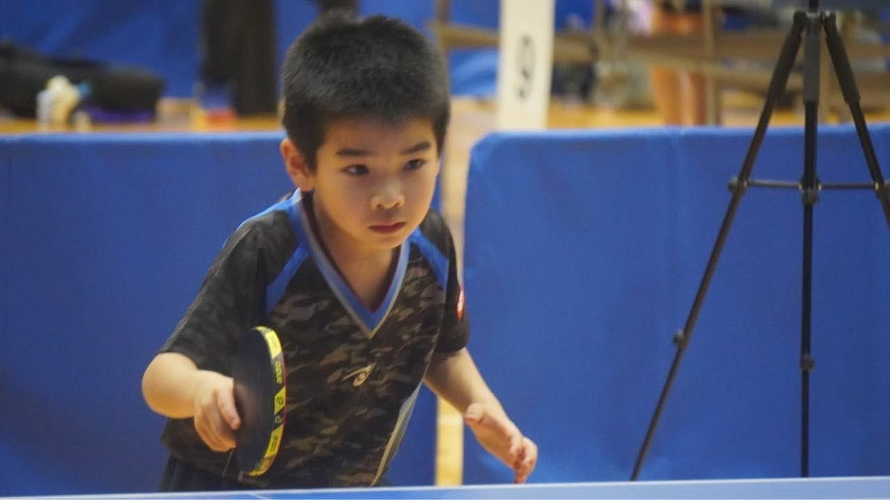
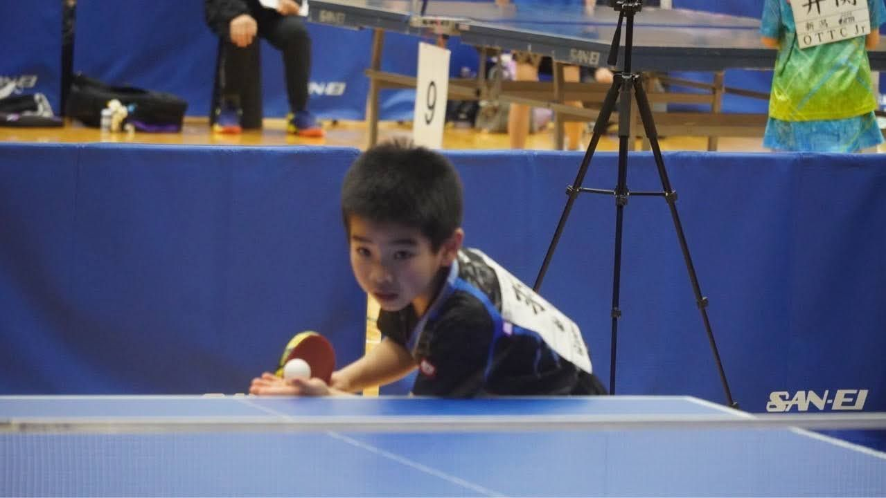
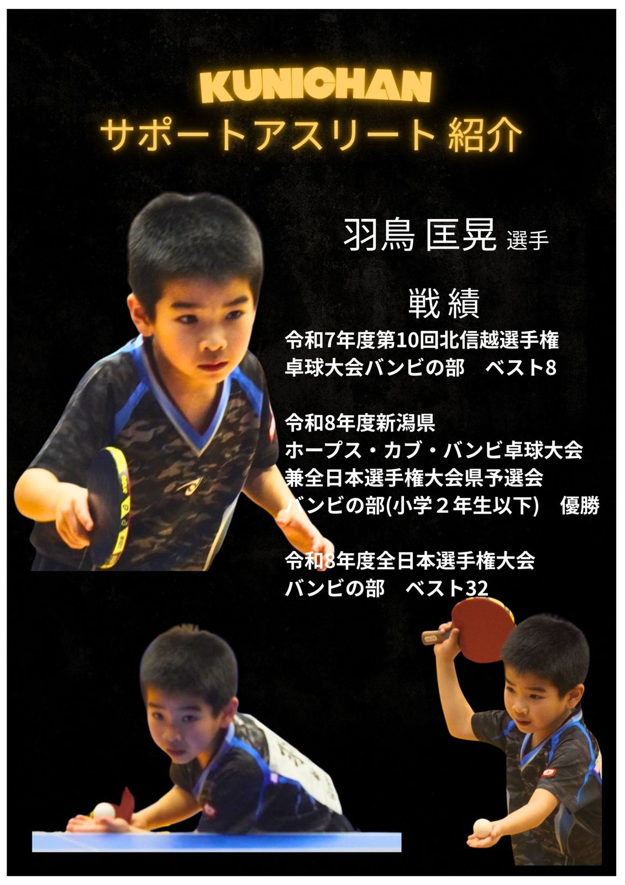
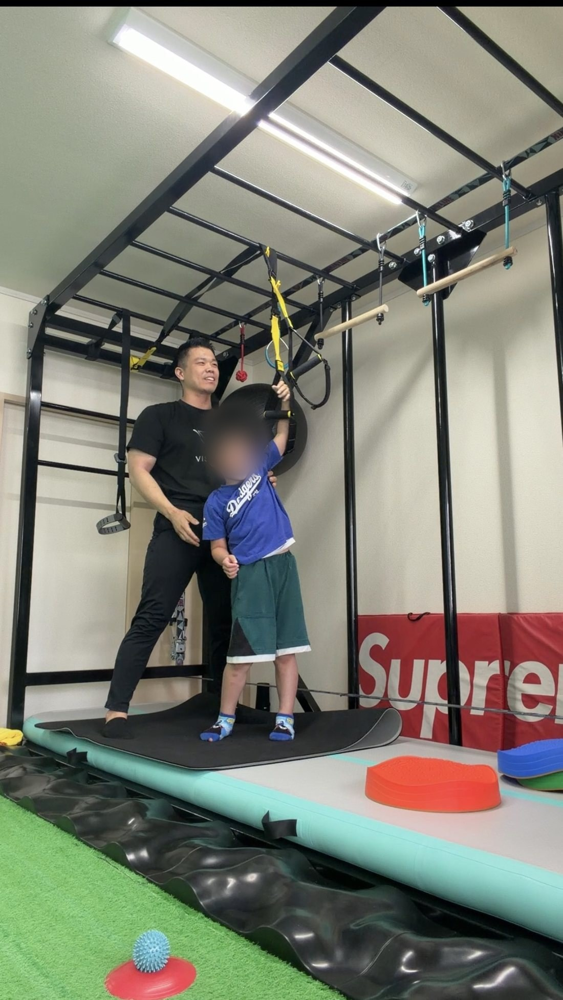
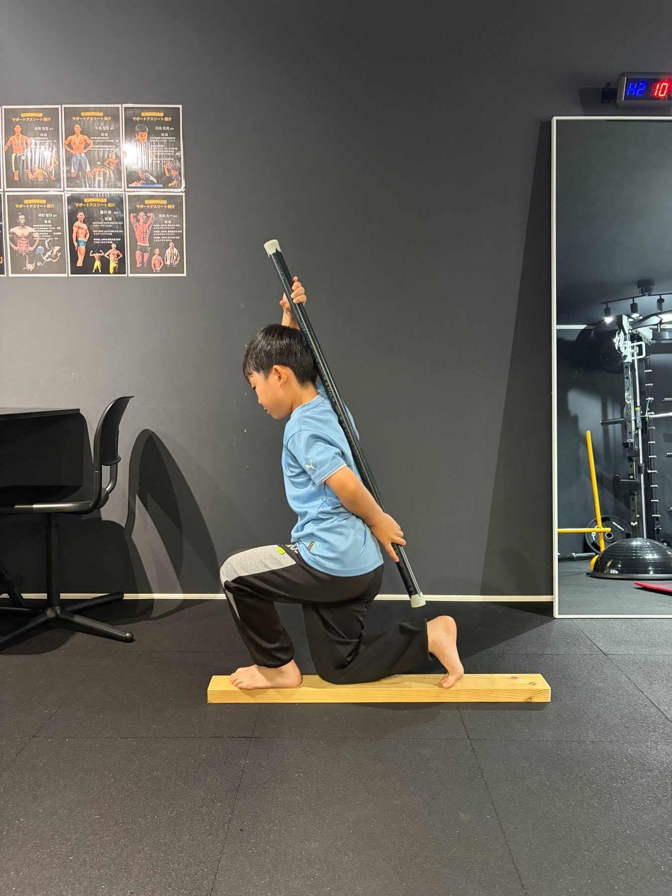

バンザイスクワット


バンザイ（側面）


またぎ動作（右脚を上げる）


またぎ動作（左脚を上げる）


※お子様の顔はぼかしています ※効果には個人差があります





スポーツや運動に必要な柔軟性・安定性・バランス能力などの身体機能を高めて、身体を動かすことが楽しく、快適になるようにサポートいたします。
※効果には個人差があります
特別な競技トレーニングではなく、身体機能を整えて「しっかり立てる」身体に。
※効果には個人差があります

発育の状態やつまずきの状態に合わせて、お子様に無理のない、動く楽しみを感じていただくエクササイズで、自然と身体と心が整うアプローチをご提供いたします
※効果には個人差があります